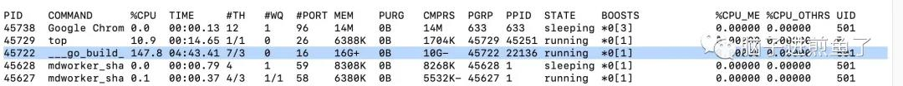
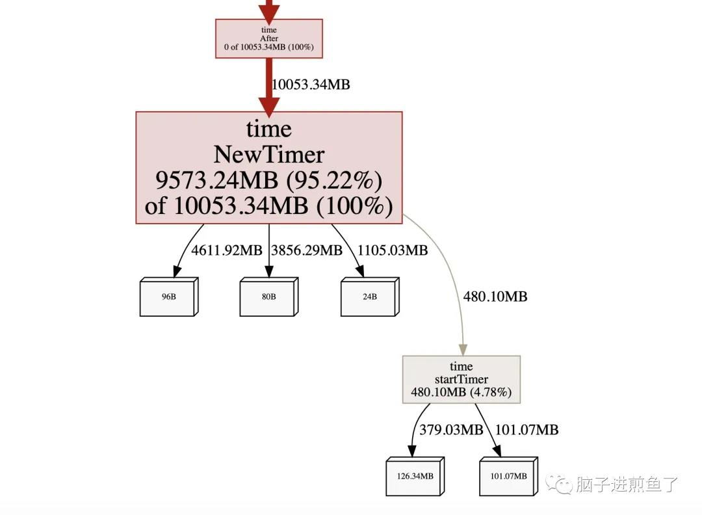
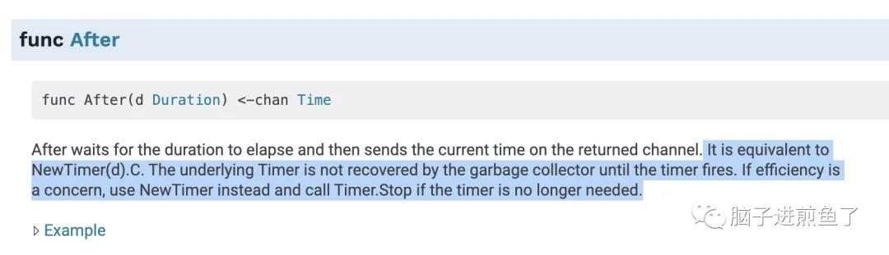
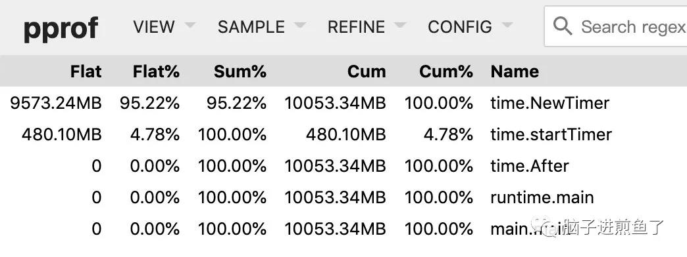
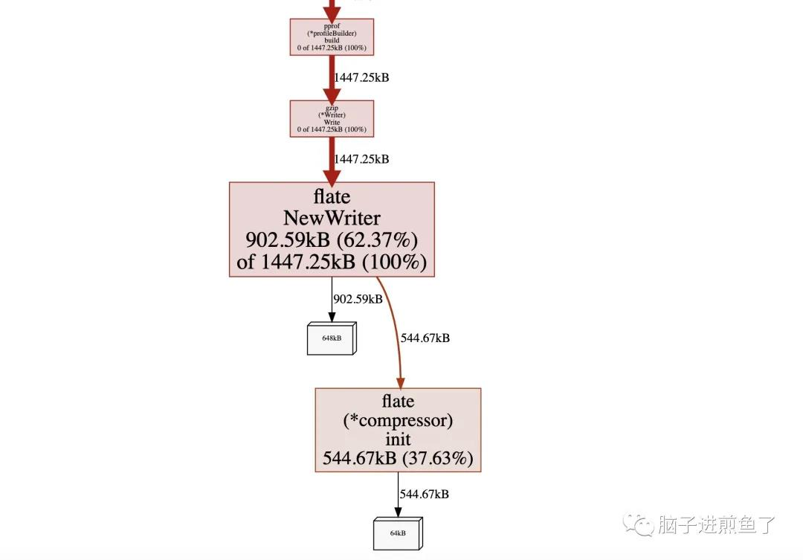

前几天在公众号分享了一篇 Go timer 源码解析的文章《难以驾驭的 Go timer，一文带你参透计时器的奥秘》。
如果大家也有兴趣共同交流，欢迎关注煎鱼的公众号，加我微信后拉你进群。
在评论区有小伙伴提到了经典的 timer.After 泄露问题，希望我能聊聊，这是一个不能不知的一个大 “坑”。
今天煎鱼就带大家来研讨一下这个问题。
timer.After
今天是男主角是Go 标准库 time 所提供的 After 方法。函数签名如下：
1 | func After(d Duration) <-chan Time |
该方法可以在一定时间（根据所传入的 Duration）后主动返回 time.Time 类型的 channel 消息。
在常见的场景下，我们会基于此方法做一些计时器相关的功能开发，例子如下：
1 | func main() { |
在运行 1 秒钟后，输出结果：
1 | 煎鱼出去了，超时了！！！ |
上述程序在在运行 1 秒钟后将触发 time.After 方法的定时消息返回，输出了超时的结果。
坑在哪里
从例子来看似乎非常正常，也没什么 “坑” 的样子。难道是 timer.After 方法的虚晃一枪？
我们再看一个不像是有问题例子，这在 Go 工程中经常能看见，只是大家都没怎么关注。
代码如下：
1 | func main() { |
在上述代码中，我们构造了一个 for+select+channel 的一个经典的处理模式。
同时在 select+case 中调用了 time.After 方法做超时控制，避免在 channel 等待时阻塞过久，引发其他问题。
看上去都没什么问题，但是细心一看。在运行了一段时间后，粗暴的利用 top 命令一看：

运行了一会后，10+GB我的 Go 工程的内存占用竟然已经达到了 10+GB 之高，并且还在持续增长，非常可怕。
在所设置的超时时间到达后，Go 工程的内存占用似乎一时半会也没有要回退下去的样子，这，到底发生了什么事？
为什么
抱着一脸懵逼的煎鱼，我默默的掏出我早已埋好的 PProf，这是 Go 语言中最强的性能分析剖析工具，在我出版的 《Go 语言编程之旅》特意有花大量的篇幅大面积将讲解过。
在 Go 语言中，PProf 是用于可视化和分析性能分析数据的工具，PProf 以 profile.proto 读取分析样本的集合，并生成报告以可视化并帮助分析数据（支持文本和图形报告）。
我们直接用 go tool pprof 分析 Go 工程中函数内存申请情况，如下图：

PProf从图来分析，可以发现是不断地在调用 time.After，从而导致计时器 time.NerTimer 的不断创建和内存申请。
这就非常奇怪了，因为我们的 Go 工程里只有几行代码与 time 相关联：
1 | func main() { |
由于 Demo 足够的小，我们相信这就是问题代码，但原因是什么呢？
原因在于 for+select，再加上 time.After 的组合会导致内存泄露。因为 for在循环时，就会调用都 select 语句，因此在每次进行 select 时，都会重新初始化一个全新的计时器（Timer）。
我们这个计时器，是在 3 分钟后才会被触发去执行某些事，但重点在于计时器激活后，却又发现和 select 之间没有引用关系了，因此很合理的也就被 GC 给清理掉了，因为没有人需要 “我” 了。

要命的还在后头，被抛弃的 time.After 的定时任务还是在时间堆中等待触发，在定时任务未到期之前，是不会被 GC 清除的。

但很可惜，他 “永远” 不会到期了，也就是为什么我们的 Go 工程内存会不断飙高，其实是 time.After 产生的内存孤儿们导致了泄露。
解决办法
既然我们知道了问题的根因代码是不断的重复创建 time.After，又没法完整的走完释放的闭环，那解决办法也就有了。
改进后的代码如下：
1 | func main() { |
经过一段时间的摸鱼后，再使用 PProf 进行采集和查看：

PProfGo 进程的各项指标正常，完好的解决了这个内存泄露的问题。
总结
在今天这篇文章中，我们介绍了标准库 time 的基本常规使用，同时针对 Go 小伙伴所提出的 time.After 方法的使用不当，所导致的内存泄露进行了重现和问题解析。
其根因就在于 Go 语言时间堆的处理机制和常规 for+select+time.After 组合的下意识写法所导致的泄露。
不知道你在日常工作中有没有遇到过相似的问题呢，欢迎留言区评论和交流。
（大雾）突然想起我有一个朋友在公司里有看到过类似的代码…